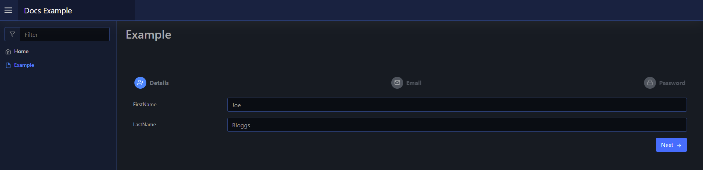
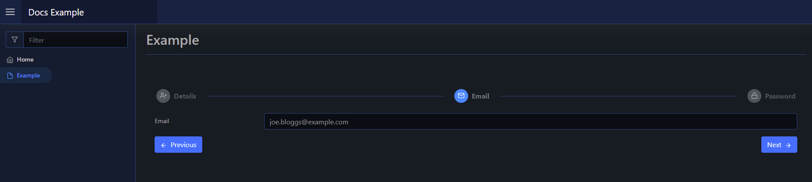
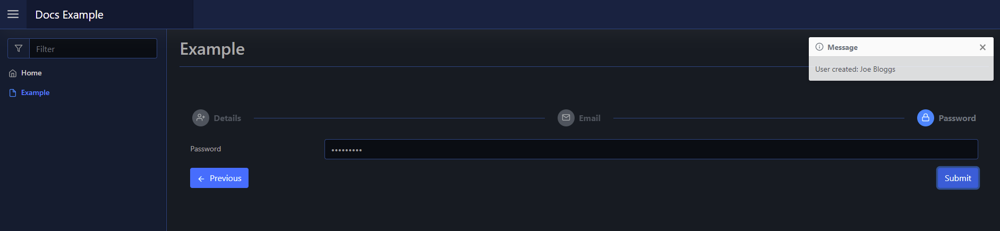

Steps
A steps layout is an array of steps with content. You can use them to step through multiple parts of a setup process.
The steps take an array of components via -Content, that can be either other layouts or raw elements.
Usage
To create a steps layout you use New-PodeWebSteps, and supply it an array of -Steps using New-PodeWebStep. The New-PodeWebSteps,also takes a -ScriptBlock, this is the final scriptblock that is invoked after every other step's optional -ScriptBlock; the one where any main logic should be performed.
Note
If you have multiple steps layouts on one page, make sure the Name/IDs are unique, including the Name/IDs of all form input elements as well.
Each step you create via New-PodeWebStep has a -Name, -Content, an optional -ScriptBlock. This scriptblock lets you run validation, or other logic, on a per step basis. If any Out-PodeWebValidation is used, then the step will be prevented from moving forwards.
For example, the below renders a layout with 3 steps to setup a very basic user. The email/password perform validation in their steps, with the user being created in the main final scriptblock:
New-PodeWebSteps -Name 'AddUser' -Steps @(
New-PodeWebStep -Name 'Details' -Icon 'User-Plus' -Content @(
New-PodeWebTextbox -Name 'FirstName'
New-PodeWebTextbox -Name 'LastName'
)
New-PodeWebStep -Name 'Email' -Icon 'Mail' -Content @(
New-PodeWebTextbox -Name 'Email'
) -ScriptBlock {
if ($WebEvent.Data['Email'] -inotlike '*@*') {
Out-PodeWebValidation -Name 'Email' -Message 'The email supplied is invalid'
}
}
New-PodeWebStep -Name 'Password' -Icon 'Lock' -Content @(
New-PodeWebTextbox -Name 'Password' -Type Password
) -ScriptBlock {
if ($WebEvent.Data['Password'].Length -lt 8) {
Out-PodeWebValidation -Name 'Password' -Message 'Password should be 8+ characters'
}
}
) -ScriptBlock {
Show-PodeWebToast -Message "User created: $($WebEvent.Data['FirstName']) $($WebEvent.Data['LastName'])"
}
Which would look like below:
  
Arguments
You can pass values to the scriptblock by using the -ArgumentList parameter. This accepts an array of values/objects, and they are supplied as parameters to the scriptblock:
New-PodeWebSteps -Name 'AddUser' -Steps @() -ArgumentList 'Value1', 2, $false -ScriptBlock {
param($value1, $value2, $value3)
# $value1 = 'Value1'
# $value2 = 2
# $value3 = $false
}